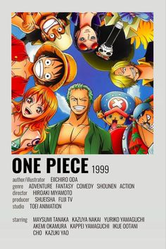

En un mundo donde los cazadores, humanos que poseen habilidades mágicas, deben luchar contra monstruos mortales para proteger a la raza humana de una aniquilación segura, un cazador notoriamente débil llamado Sung Jinwoo se encuentra en una lucha aparentemente interminable por la supervivencia.
A través del tráiler que os hemos dejado justo arriba, hemos podido conocer que el anime de Solo Leveling llegará de manera exclusiva a Crunchyroll el próximo mes de enero de 2024
One Piece

One Piece narra la historia de un joven llamado Monkey D. Luffy, que inspirado por su amigo pirata Shanks, comienza un viaje para alcanzar su sueño, ser el Rey de los piratas, para lo cual deberá encontrar el tesoro One Piece dejado por el anterior rey de los piratas Gol D. Roger.
One Piece es una serie manga que ha sido escrita e ilustrada por Eiichirō Oda publicada semanalmente en la revista japonesa Weekly Shōnen Jump desde el 22 de julio de 1997 y la cual ha logrado convertirse en la serie manga más popular y exitosa en toda la historia.
Algunos sitios de internet marcan que tiene 20, pero la serie es transmitida en el sitio de Crunchyroll, donde la dividen en 13 temporadas, algunas más largas que otras; tan solo las primeras cuatro partes en las que la divide el sitio son: East Blue con 61 episodios; Alabasta con 74 episodios; Sky Island con 71 episodios y Water 7 con 119 episodios.
Jujutsu Kaisen
nos cuenta la historia de Yuji Itadori, un estudiante de instituto que pasa sus días con sus amigos en el club de ocultismo de su escuela pero todo esto cambiara cuando descubre que los espíritus realmente existen y deberá reunir un objeto para salvar a sus amigos.
Como ya se conoce, el anime de Jujutsu Kaisen 0 arrancará el 6 de julio de 2023 con el arco que tratará la historia del pasado de Gojo.
Ese contenido en concreto abarcará de los capítulos 1 a 5 de la segunda temporada de Jujutsu Kaisen y se mantendrá activo hasta el 3 de agosto de 2023.
Una vez llegue el 10 de agosto tendremos un episodio de recapitulación que se centrará en los hechos del arco del pasado de Gojo así como también en lo que se viera en Jujutsu Kaisen 0.